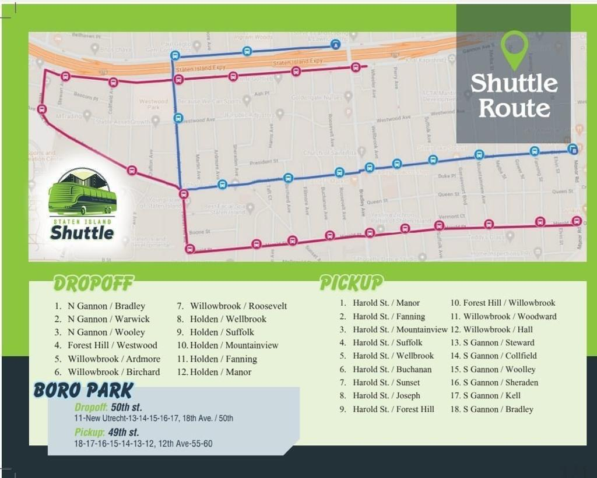

Full route map with all pickup and dropoff stops around the neighborhood, plus the Boro Park route.

Dropoff — 50th St.: 11–New Utrecht, 13, 14, 15, 16, 17, 18th Ave. / 50th
Pickup — 49th St.: 18, 17, 16, 15, 14, 13, 12, 12th Ave., 55–60